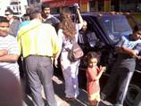

transforming CHECKPOINTS into MEETING-POINTS
| home |
| about |
| work |
| story |
| team |
| schedule |
| links |
|
MUSICAL CARAVAN TO JORDAN
25 July - 8 August 2004 The All Nations Café seed team had left Jerusalem Sunday, 25th July, en route to the Jordan River crossing: Amman, Amman, Gam Atta Moozman, Come on, Come on, Ze Lo Ye`uman! Daphna sat and played guitar at the border, and we sang along: There is so much magnificence in the ocean, and Olga – a Palestinian living in Brooklyn – shared with us that she had tears in her eyes listening to us and invited us to the Regency hotel in Amman. The friendly and clever Jordanian border policemen immediately recognized us and asked if we were coming to perform at the Jerash festival. From the border, with Layla who was coming back from a visit to her parents near Afula, shared with us a taxi to Abdali Bus Station in Amman. We proceeded to have our first lunch at Cleopatra restaurant at the station, where we also had our first live performance in front of a warm supportive audience: Muhammad, Ahmed, Khalafallah the Sudani, Jamil and others. We arrived at our friendly and simple hotel Sydney in Downtown Amman, soon to become All Nations Café Sydney. We had dinner at Books@café, the most IN café - bar - lounge - bookshop in town, where you're more likely to hear English than Arabic, and where we also scheduled an All Nations Concert for Friday of the following week with Seif – the man in charge who had already heard of the All Nations Café from a friend who visited Jerusalem. Next day the team was headed to Safeway supermarket to buy tickets for the Jerash festival concert of Nancy Ajram – the biggest Star in Arabic music today. We hailed a bus, and Ali – a most hospitable bus driver – turned a regular city bus ride into a full tour of the main streets of Amman including a stop for food and beverages and meeting with the bus company's personnel. With our newly bought tickets and Sunshine – Daphna's new guitar - we marched happily to the Regency Palace, for a supposed meeting with Olga and Mahmoud (from the border crossing). Well, Olga and Mahmoud we didn't meet, but we met almost the entire jet set of Amman, including: Ayman – a top Syrian hairdresser of the stars (Nancy Ajram among them), his main man Nouraddin from Jaffa, Shadya – charming young Jordanian woman, Abu Tarek – director of catering and conventions at the Regency from Jenin and a true man of peace, Geert – the assistant general manager of the hotel, a prominent Lebanese singer, and V.P. – a Canadian phsycoanalysist who works for the Bangkok Hospital in Thailand. Daphna and Miriam – our own superstars – gave Ayman the honor of doing their hair, while Dhyan left him a signed photograph of his lion face from last Purim at the All Nations Café. Now, on our second night here, we already feel at home, warmly accepted by the people of Jordan, with a track record of café, store & street performances all over town. The Magic Continues...Third day into the caravan, we were pleasantly surprised to find our dear David in the hotel lobby first thing Tuesday morning. He came with a Smart car from Jerusalem, and slept in it next to the Roman amphitheater in Amman. We all had breakfast at the famous Hashem restaurant close to our hotel, and enjoyed the service of Hasan from Hebron who recognized our Hebrew and approached us with a warm smile. With the intention of visiting Madaba and Mount Nebo, we headed for the Abdali bus station and stopped to say hello to our friend Jamil at the Munzur hotel. The short stop became a song composition, live concert and a recording - Ya Salaam Ya Salaam - this song has become our business card. Waiting for the Madaba bus, we met students, women with children and a 10 year old boy with a peanut stall, who took our simple camera to bring out the best photos it could produce. We then decided to go back to the hotel, where we received a call from Ayman, our Syrian hairdresser friend, who told us to come immediately to the Regency hotel for a press conference with the performers of the Jerash festival. Arriving there, we met Palestinian journalists living in Jordan, who were extremely emotional and very ambivalent about meeting Jews from Israel. One of them, who had lost many of his relatives in the West Bank, was initially refusing to speak with us, but gradually opened up and shared his feelings and later his hopes.
In the elevator of the hotel we met Hawla, a charming Moroccan 10 year old actress, who handed us an invitation that was about to take us into an unexpected adventurous Royal Journey. Her father, Jamal, the director of the royal Moroccan theater, arranged a VIP lift for us in the car of the director of the Jerash festival, escorted by his secretary, Nawfal, to watch the opera Cavaliera Rusticana from the best seats. Nawfal showed great interest in the music caravan, and brain stormed with us about creating a new Middle East peace festival in Wadi Rum. After the opera we went back stage to mingle with all the "who's and who's" including our star Hawla, who honored us with a signed dedication to the children of Jerusalem. First thing Wednesday morning, Yonatan appeared in the lobby with a craving for falafel, and we all went to Mecca Lights for a full Jordanian brunch. A Jordaninan couple with a child sat at the table next to ours and we couldn't ignore their beautiful loving relationship. They were completely at ease showing their love to each other in public. Daphna sang them You fill up my senses like a night in the forest.. We continued to the Radisson-SAS hotel to meet the famous Lebanese singer Nancy Ajram and deliver a letter from her young fans in East Jerusalem. While the superstar took an afternoon nap we treated ourselves to a cool swim in the pool, and a concert with two cousins - a Jordanian boy and an American boy. Well, we can't say we really had a meeting with Nancy, although we did see her storm with her bodyguards through dozens of groupies, but we did have numerous encounters with exciting and beautiful characters such as: Omar Diab - the head of security of the hotel, his colleague - a former personal guard of the late King Hussein, the gorgeous teenage girls - Ruwan, Umaya and their sisters - who came with their families from Dalyat El Karmel - a Druze village in Israel - especially to see Nancy, as well as two Arab Israeli students who are also die hard fan.
First thing Thursday morning we met Itsik and his father Arthur in the lobby. Daphna used Miriam's groceries from the day before plus freshly squeezed orange juice to prepare the first of many breakfasts, that were about to become the best in Amman. The caravan crew, seven in total at the time, sat around a table, blessed the food and ate in great delight. We then held the first of many caravan circles, where each of us shares their feelings, wishes and ideas for the day. The circle decided to open a one night All Nations Café at the Jerash festival that evening, and each of us set out to take care of a different detail involving this undertaking. David’s two seater Smart car, loaded with the new gas stove, finjans, glasses, fair trade coffee and All Nations Café carpets and pillows, took David and Miryam to Jerash, while the rest of us were satisfied taking a public bus, singing the whole way and making friends with a lovely police officer who was about to provide us with a VIP escort into the festival and find us a perfect spot to set up our traveling café. The main feature of our location in the ancient Roman city of Jerash was a huge stone grail-like fountain, which we immediately surmounted and commenced the performance in Hebrew, Arabic and English from there. The happening attracted many young local kids who started singing and dancing and soon became part of the All Nations Café family and helped us set up the café, and then joined us for a bite. As the sun was setting and the full moon was rising visitors from all over Jordan and the Middle East stopped and showed curiosity. After exchanging greetings and answering their questions, many of them decided to take a part in the gathering that was forming. Some joined the singing and dancing, some photographed and interviewed the fellows of the All Nations Café for the press and others just sat on the ancient Roman stairs, had fair trade coffee and watched the show. The concept of fair trade, although new to Jordanian people, was immediately understood and accepted by our guests. One even offered a modest donation to support the cause of paying fairly to farmers around the world. Driving home to Amman, a fellow Jordanian passenger insisted on paying our fare and we lay in our beds happily reviewing our wonderful day and then fell asleep with our great hosts and guests still in our minds and forever in our hearts. Next morning around the breakfast table we shared our feelings and discussed our future plans for the weekend, finally reaching a consensus on spending it in a natural surrounding outside of the city and holding a Kabbalat Shabbat ceremony there. While the boys had trouble finding a taxi on a Friday (a day of prayer for the Muslims), the girls attracted a beautiful talented Kurd musician from Iraq, who happened to be walking down the street by our hotel while Daphna and Miryam were singing: "Pacha Mama I’m coming home to the place where I belong.." and couldn’t resist accompanying them on his trumpet and flutes. Merrily playing on the streets of Amman, Omar was still oblivious to his major part in next week’s All Nations Café show, which even as he was blowing his trumpet was being formed in the astral planes. Finally, in the late afternoon, a mini van taxi appeared with two tourists en route to Petra and we decided to board it and leave Amman before it would be too late. We had a pacifying drive out of the city, and after a few hours we stopped in an open desert vastness to release our body and reconnect to mother Earth and to each other. We were inspired by the father and son connection of Arthur and Itsik during this drive which words cannot possibly describe. Just before arriving in Wadi Musa, the village adjacent to Petra, we stopped above the canyon watching the sunset for a short Kabbalat Shabbat ceremony of candle lighting and singing Shabbat songs with the Jordanian taxi driver and the two female tourists, an American and an Egyptian. After settling in the hotel we separated into small groups and went out for dinner. The carnivorous elderly folks, Arthur and David, ventured off into a fancy restaurant, where they happened to meet a young Bedouin poet with beautiful eyes and long black hair, who was oblivious to his future roles in our caravan drama, as a guide, a host, a lover and a dear friend. Hussein read aloud one of his poems and invited the whole group to stop and visit him the next day at his shop within the world treasured Petra site. 
Early next morning, we walked into the Petra Siq, the winding canyon, marveling the famous red stone. When we finally reached the opening to the treasury, we met a Czech couple who joined us in singing "Shir Lama’alot". We entered the high ceiling main hall of the treasury, where we chanted from our hearts and created a sacred space. Afterwards, each person took a different route: Miryam on a donkey, Dhyan and Itsik on foot, Daphna and Yonatan with their guitars in a low rhythm after a sleepless night, and Arthur just vanished into thin air... Traveling on different paths, each of us met with a member of the same Bedouin family from the nearby village of Um Sayhoon: Dhyan spent time with Rosa and her mother - both souvenir sellers and very friendly, Daphna and Yonatan met Rosa’s sister and drank tea and sang with her, and Miryam rode on their brother’s donkey with him as her faithful guide. Miryam and Dhyan arrived at the upper monastery, where they met two beautiful Bedouin girls who told them about their school life, and a Palestinian from Gaza who was very keen on meeting Israelis and hosting everyone at his home. Daphna and Yonatan were expelled from the site because they were so outstanding with their guitars on their backs, and couldn’t produce valid tickets on demand. Upon re-entering they met a charming and helpful policeman who arranged a ride for them back into the site. They went to recuperate far from the crowd in a hidden spring. We all met again in the early evening hours, including Hussein, the poet from the previous evening, who invited us to come and stay at a Bedouin camp site operated by his tribesmen. After dinner he took us there, and we found ourselves in the most exotic enchanting desert surrounding, where we were warmly hosted by Hussein’s friends under thousands of stars with excellent, yet simple, facilities. Very early next morning, David set out to fetch Lisa from the northern Israeli border with his Smart car, and Hussein set out to meet a tourist group at the southern border crossing. The rest of us had a morning of wonder at the magical camp before we headed back to Amman. The bus ride to the capital became a All Nations Caf? musical caravan trip, with all passengers learning our songs and singing along. We returned to our familiar Sydney hotel, met with Hila who had just arrived from Israel, and we all went to Jerash Festival for the Circassian Dance performance that night, where Lisa and David were already waiting for us. Yonatan and Daphna, slower than the rest of us, were again spotted due to the unusual musical instruments on their backs, and were not allowed to enter the festival for security reasons (The director was afraid they would steal the show once again...). We later found out that major Jordanian and other newspapers had published articles about our festival activities the week before, and the festival management was under political pressure to ban any further Israeli participation in the shows. The director, Jeryes Samawi, met with Daphna and Yonatan to explain his position. The meeting began with aggressive notes, and although he wouldn’t allow them to enter, singing Ya Salaam to him softened the atmosphere. During this drama at the gates of Jerash, the rest of the Caravan was having a great time at the South Amphitheater. Before the show began, Lisa and Dhyan performed in the aisles to the clapping of 6000 Jordanian Circassians, and made many new friends among them, notably a young gentleman, Osama, who later took them home in his car. Next morning the nine of us went back to Mecca Lights restaurant for breakfast, where we held our daily sharing circle. As expected, once again we there met a beautiful family, this time from Iraq: Raja’, the mother with her son and her daughter Zahra, and her sister. We instantly connected, and the two "families" exchanged stories of the life in Baghdad and Jerusalem, singing, laughing and hugging. Lisa, in particular, was totally taken by Zahra, the 10 year old Baghdadi girl, and when they had to part (reluctantly) they made an appointment to meet on the following days. We separated to smaller groups. Lisa, David, Hila and Dhyan went to the Abu Ghosh Sweets shop, where they bought Knafe, joked with the owner, who comes from a village near Jerusalem, and then temporarily joined the staff... David went later to have a chat with a Jordanian hotel executive he invited to meet us. Daphna, Yonatan and Itsik were out on a hunt for musical instruments, preparing for the following day’s concert. Aided by a devout Muslim driver, who was religiously against the Jews and Israel, but nevertheless went out of his way to help them, they found the Do Re Mi music shop, where they spent a whole afternoon playing music, doing Yoga, talking in Assyrian with the Assyrian salesman, and finally, tired but happy, went out with a Syrian oud. In the evening we all met again at the Sydney hotel, where Elija and Jeniffer, musicians from a Catholic community near Lake Constance, Germany, had just arrived to join the caravan. We then gathered in the lobby to have our first unofficial rehearsal preparing for The Concert: While David was chatting with his Jordanian pal, Elija and Jeniffer played us their original songs, then Miryam sang, Daphna and Yonatan played and sang, and the Sydney hotel was becoming more and more the All Nations Café, Amman. Next morning, the day of The Concert, we made our own breakfast at the hotel, and had a sharing circle and planned the day. Each team member went to accomplish their part of the daily project: Hila was in charge of decorate the "concert hall", David and Lisa took care of the catering, Dhyan went to invite people and hang posters at the Radisson, and the musicians stayed for a general rehearsal with Omar, the Kurd trumpeter we met the week before. The enthusiastic Jordanian reporter, who wanted to cover our tour, broke the news that her editor told her she was not allowed to meet with us anymore due to politics. When we came back that afternoon, we were shocked to discover the Sydney’s lobby with a brand new look: The 200 year old sofas were hidden behind the kitchen curtains. The floor was covered with the All Nations Caf? red carpets and cushions, lustrous red silk-like cloth was flowing from the ceiling, a line of candles was lighting the staircase leading to the lobby, and trays of Arabic sweets and fruit were abundantly spread on low stools. Just as everything was ready, the last two musicians arrived from the Israeli border. After Yael and Taha received Sydney’s honeymoon suite (where the toilet actually worked) reserved especially for them, were quickly escorted to Hashem’s for refreshments (falafel). Miriam came up to the stage for a last rehearsal, but her presence was so energetic that the show actually began then and there. Slowly but surely the audience trickled in: Syrian merchants, Nur - the Palestinian (from Jaffa) hairdresser, Osama - the Circassian dancer, David’s Jordanian friend, the Bedouin hotel managers, and others. Each guest was welcomed with a cup of steaming Fair Trade coffee and with sweets and fruit, they were each cordially escorted to their seat and were treated as Kings. The songs were multilingual: Taha sang enthusiastically in Arabic with a heavy American accent: "E Layla, E Layla, E Layla ya samra, Ya samara.." Miryam sang in Arabic and Hebrew: "A Salaam Jaa, A Salaam Hoona.." Yonatan sang in Hebrew: "Ose Shalom Bimromav.." Elija and Jeniffer sang in German and in English: "God is not in the Wall.." Daphna and Yael sang in Hebrew: "Re’i Lecha Re’i ata li.." and we all joined in on the trilingual Caravan Anthem: "Ya Salaam Ya Salaam". In the middle of the show, a Saudi family arrived from Damascus. A husband with his black veiled wife and their children. They were looking for a room and were initially startled by the whole scene, but as they relaxed and heard that this was a peace concert, they joined the audience, and the wife even took off her veil. Omar accompanied the whole show with a Darbuka drum, as well as trumpet and flute, and set the beat for Hila’s spectacular belly dance. Osama and Lisa performed a Circassian dance called "Kafa" and then taught everyone another dance called "Chechen". During one of her preformances, Miryam spontaneously asked people to rise up and face a partner from another country and bless eachother. We were all shocked as it was not planned in advance, and we were afraid this would be too much for our audience to bear. But once again we discovered that Miryam’s straightforwardness can work magic on people. Timidly at first, everyone approached each other, and started talking, then blessing, embracing and pouring out their emotions. It was the most touching part of the evening. After we hugged each of our guests and sent them on their way, we went to our rooms and had a blissful sleep, dreaming about the magic that we had all experienced that evening in the happiest, most enlightened and intercultural place in Downtown Amman. We woke up still buzzing with the vibe of last night. We had our largest circle on the carpeted floor, and shared a huge salad, cheese, fresh orange juice, tahina, yoghurt and bread. This was the closing circle of the caravan, with all its 13 members and Hamze, the hotel manager that became an inseparable part of our circle, present. Each one poured their heart out. During the sharing, Yonatan, who overstayed with the caravan for a few days, received a number of phone calls from his employer, who was angry that he hadn’t yet showed up at work, and finally sent him an SMS saying: "U R Fired!" The presence of two beautiful ladies on his sides eased the harsh news. Arthur, who prolonged his stay with the caravan as well, declared that although his mind was still thinking that all the Arabs should leave Israel, his heart felt that the encounters with Arabs during the caravan were real and beautiful and gave him hope. After the circle, four of our members went back to Israel, and the rest of us decided to head down south. But something was still holding us in Amman. During our long wait for the taxi we invited ourselves to perform at Abu Issa’s Caf?, down the hill from Sydney. Abu Issa was born in Haifa in the 1920’s and spoke perfect Hebrew. We took out our instruments and formed a circle on the sidewalk in front of his caf?, in the middle of one of Amman’s busiest streets. Soon we were surrounded by people from all ages and nationalities, singing in Arabic and Hebrew. Some of the passers by stopped to talk with us and offered us warm hospitality. One fundamental looking character started shouting at us in good Hebrew: "Go sing at the checkpoints! Sing to your prime minister, not here!" But once we offered him a hand shake and traditional blessing he quickly changed his tune, would not give us his name and just said quietly: "Good, sing on.." and disappeared. Two kids from Alexandria, Salma and her brother Ahmad, who were living on the roof of the Sydney Hotel building, joined the happening and exchanged flowers and kisses with us. Feeling hungry and a slightly angry because our original traveling plans hadn’t worked out, we went to seek humus and refuge at Hashem’s, and then decided to stay another night in Amman. Yael and Taha went to hang out at the Jerash festival, while Daphna and Yonatan, leaving their guitars behind, joined them as they had an account to settle with the festival. Miriam, David, Lisa, Hila and Dhyan moved to even a higher class hotel than Sydney (imagine that!). They met a family from Yemen, and were invited to four weddings (and no funeral) in Tsana, a famous city in Yemen. The next day Miriam spoke to our long lost Bedouin friend from Petra, Hussein, who was going to meet us, host us and guide us in Wadi Rum. By the afternoon she went with Yael, Taha, Hila and Daphna on a bus ride down south. Lisa, David and Dhyan stayed in Amman and had wonderful adventures there, meeting Iranians carpet sellers, Syrian dancers and neighbours from East Jerusalem. They also helped make (and eat) a special Syrian ice cream. David and Dhyan rode down to Wadi Rum to meet up with the rest of the gang, on a starry starry night at the heart of the magnificent desert. From there we drove back to Jerusalem, some through Aqaba and some through Bet Sean, with many other adventures that could fill a whole book. We all had a strong feeling of returning to Jordan in the future, and having a gathering with all our new friends from the Middle East. |
 After listening to the Palestinian reporters we sang to them and made it clear that music, as our friends from the Iraqi Maqam ensemble put it, is a universal language, beyond politics and prejudice. Farida and her husband came from Baghdad to perform traditional Iraqi songs written by Jewish and Muslim Iraqi composers, at the Jerash festival. They were open and warm toward us, invited us to their concert and were happy to discuss a possibility for a concert in Israel/Palestine.
After listening to the Palestinian reporters we sang to them and made it clear that music, as our friends from the Iraqi Maqam ensemble put it, is a universal language, beyond politics and prejudice. Farida and her husband came from Baghdad to perform traditional Iraqi songs written by Jewish and Muslim Iraqi composers, at the Jerash festival. They were open and warm toward us, invited us to their concert and were happy to discuss a possibility for a concert in Israel/Palestine. The whole Arab - Jewish - Druze group started to speak Hebrew and gathered around the grand piano in the piano bar to sing in English, Arabic and Hebrew:
The whole Arab - Jewish - Druze group started to speak Hebrew and gathered around the grand piano in the piano bar to sing in English, Arabic and Hebrew: DONATE
CONTACT US
|